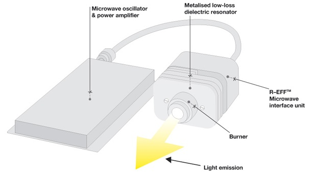
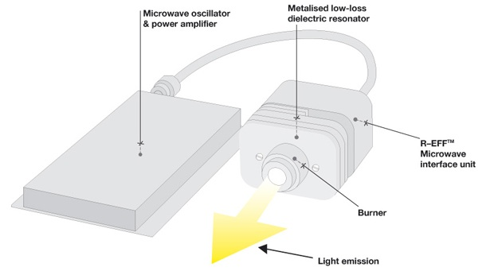

電燈的效率
7/Jul 2007
Continuum 2.4，持續照亮你的明燈

鹵素燈泡，92%的電力轉換成熱能；一般燈泡，90%電力轉換成熱能；LED也有85%轉成熱能。
我以為 LED 燈泡效率已經不錯了
(好像不太熱啦…XD)
沒想到才只有 15%…Orz
雖然比一般燈泡的 10% 多了一半的效率
不過跟這個 Continuum 比起來就差多了…(50%)
廠商們趕快量產平價化吧…^_^
Continuum 2.4，持續照亮你的明燈

鹵素燈泡，92%的電力轉換成熱能；一般燈泡，90%電力轉換成熱能；LED也有85%轉成熱能。
我以為 LED 燈泡效率已經不錯了
(好像不太熱啦…XD)
沒想到才只有 15%…Orz
雖然比一般燈泡的 10% 多了一半的效率
不過跟這個 Continuum 比起來就差多了…(50%)
廠商們趕快量產平價化吧…^_^